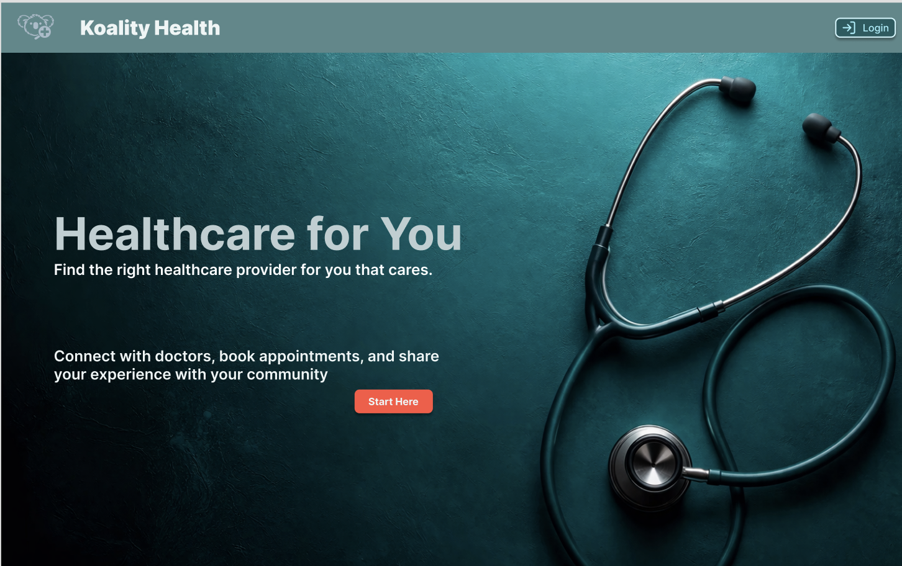
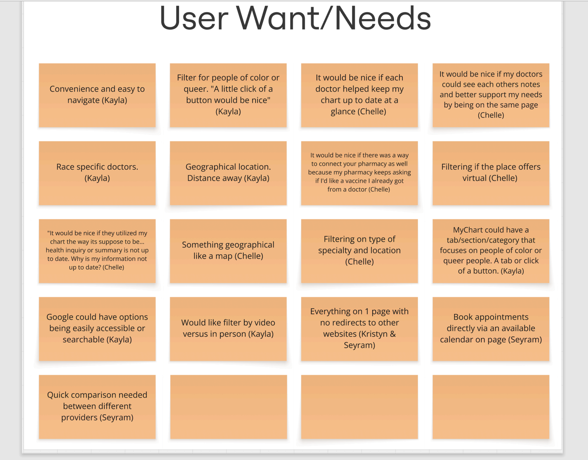
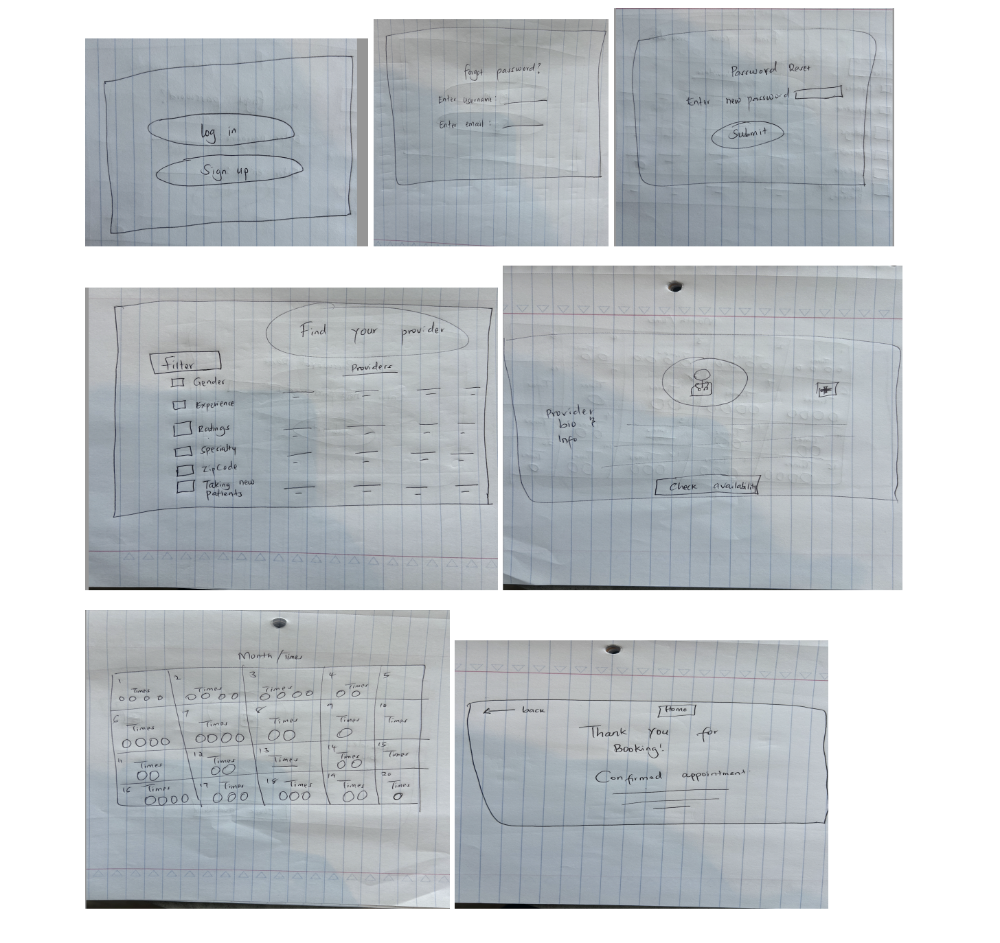
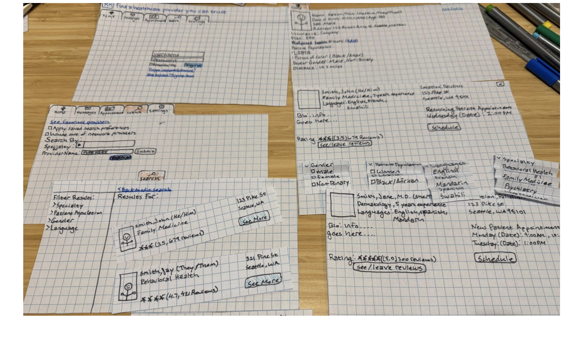
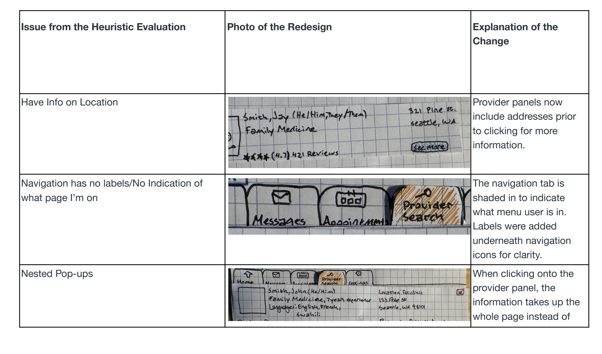
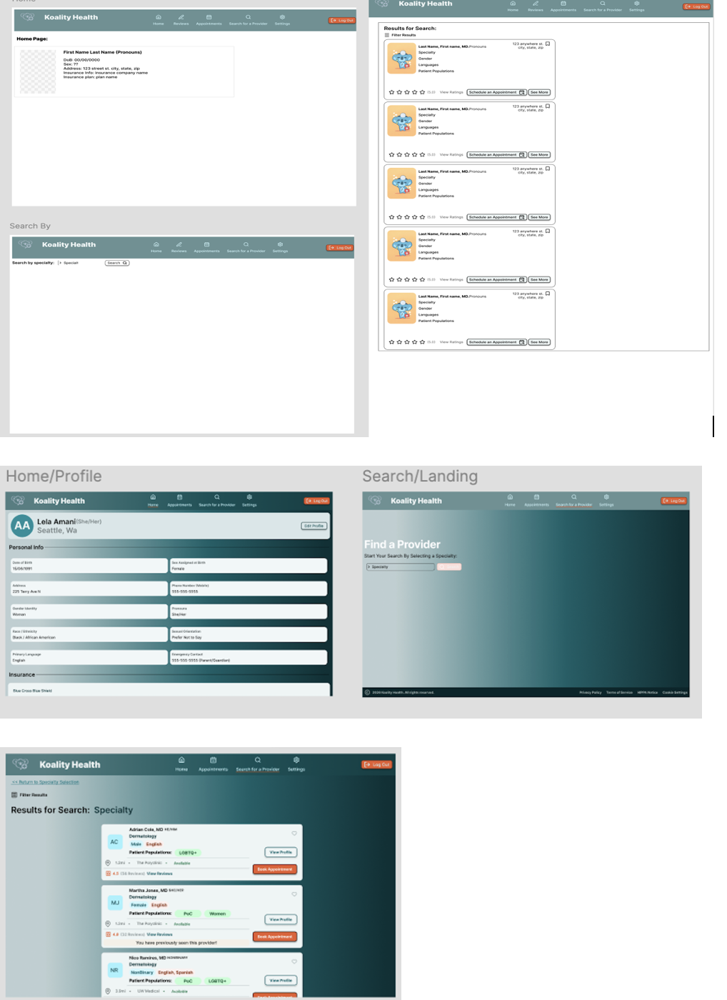
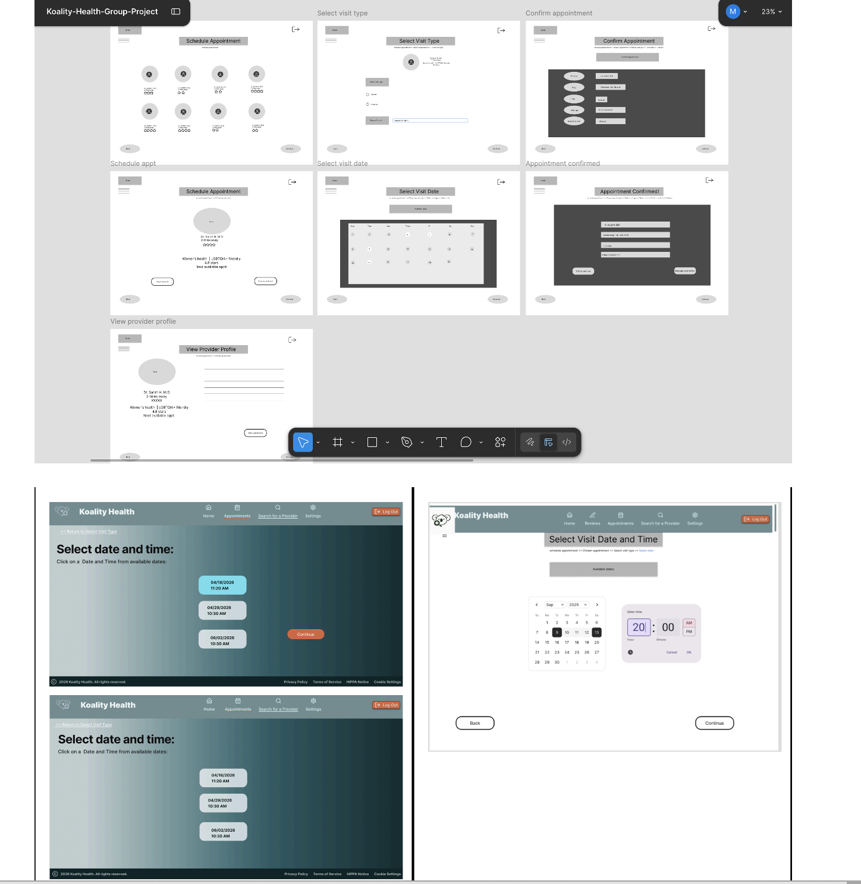
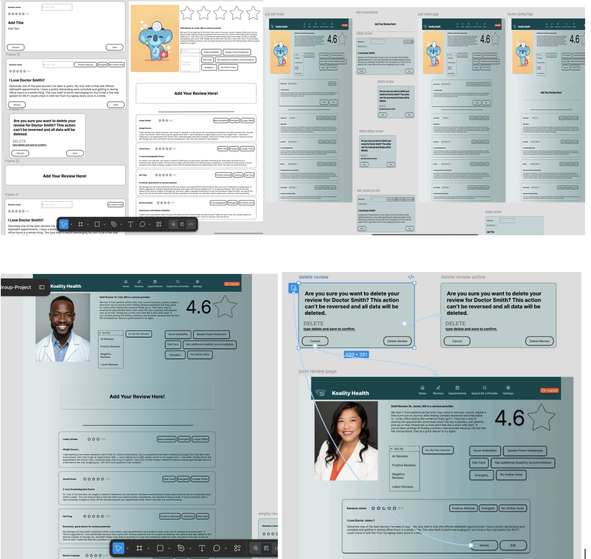
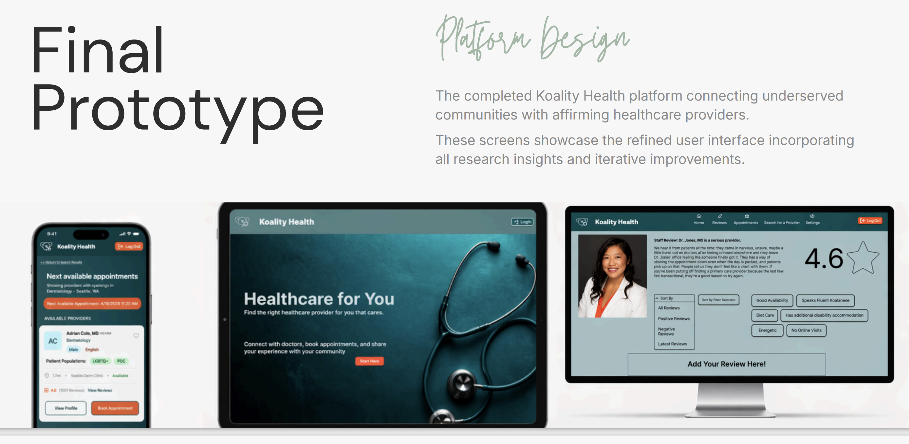

Designing a more trustworthy way to find culturally competent healthcare providers
Koality Health is a healthcare discovery platform designed to help people of color, LGBTQIA+ individuals, and women find providers who better understand their identities, needs, and lived experiences.

Final high-fidelity concept for Koality Health
Summary
About the project
Koality Health began as a response to a real healthcare access problem: women, people of color, and LGBTQ+ individuals more broadly continue to face bias, dismissal, stigma, and difficulty finding equitable and culturally competent care. Existing tools often force users to piece together information across insurance directories, search engines, and third-party review platforms before they can feel confident choosing a provider.
The problem
- Patients from marginalized communities struggle to find providers who understand their identity and background.
- Bias and dismissive past experiences reduce trust in healthcare systems.
- Users often have to search across multiple tools to compare reviews, insurance compatibility, availability, and provider fit.
- Finding the right provider can feel time-consuming, fragmented, and emotionally draining.
Objective
We wanted to design a platform that would help users search for providers more efficiently, evaluate fit with more confidence, and move into scheduling with less friction. The product needed to support both trust and convenience: users wanted identity-aware filtering and meaningful reviews, but they also cared about availability, location, language, and insurance compatibility.
Process
- Defined the problem space and target communities
- Conducted interviews to understand how people currently find care
- Synthesized findings into themes, personas, and task requirements
- Sketched concepts around provider search, reviews, and appointment management
- Built paper and medium-fidelity prototypes
- Used heuristic evaluation and user feedback to refine the interface
- Created a high-fidelity prototype showing the final end-to-end flow
Research
Because of the semester timeline, interviews were our primary research method. The team conducted six interviews across in-person, online, and contextual formats. Participants described how they searched for providers, what criteria mattered most, and what slowed them down or reduced trust in the process.
What users told us
- Identity matters. Users wanted providers who understood their cultural background or lived experience.
- Trust is everything. Reviews, word of mouth, and prior experiences strongly shaped decisions.
- Convenience still matters. Distance, availability, insurance, and filtering options remained critical.
What we learned
- Users were frustrated by needing to jump between insurance directories, Google, and review sites.
- Searches felt better when strong filters were available early.
- Reviews were more valuable when they felt specific, community-informed, and tied to provider fit.

Research synthesis and key user insights
Key design opportunities
After research, three core opportunities emerged. These became the backbone of the product and guided the rest of our design work.
- Create a better provider search experience with identity-aware filters.
- Build a review system that helps users judge fit, not just star ratings.
- Make appointment scheduling and management feel simpler and more direct.
Ideation
During ideation, we translated research themes into concrete workflows. Our group focused on filtering providers, viewing/adding reviews, and managing appointments. We explored features such as search by specialty and identity, provider tags, better review visibility, edit/delete review flows, and appointment dashboards with reschedule and cancel actions.

Early sketches exploring provider search, review flows, and appointment management
Early prototype
The first paper prototype centered on provider search and scheduling. Users could search by specialty, apply filters, view provider summaries, and begin booking an appointment. These early flows helped us test what information needed to be surfaced sooner, especially provider details, reviews, and scheduling controls.

Paper prototype for provider search and scheduling
Testing and evaluation
As the prototype became more detailed, we evaluated it through user feedback and heuristic analysis. This made the next round of changes much more specific.
User feedback
- The homepage felt too empty and did not clearly suggest what to do next.
- Scheduling was confusing, especially when users had to choose date and time separately.
- Review creation and editing needed a clearer interaction flow.
- Users wanted confirmation after booking and an easier way to add appointments to their calendars.
Heuristic issues
- Weak visibility of system status after booking
- Too much recall and not enough visible choices in scheduling
- Inconsistent or unclear terminology and navigation cues
- Missing error prevention and confirmation for destructive actions

Evaluation findings guided changes to the scheduling flow, homepage, and review interactions
How the design evolved
1. Search became more informative
Early search results did not surface enough information up front. Later iterations added clearer provider cards, more visible addresses, labels under navigation icons, and better filter behavior so users could understand options without extra clicks.

Search results evolved to surface more useful information earlier
2. Scheduling became simpler
One major change was combining date and time selection into one screen instead of making users jump across multiple steps. Clickable options replaced more ambiguous inputs, and the final flow added clearer confirmation feedback.

Scheduling evolved from a more fragmented flow into a clearer step-by-step experience
3. Reviews became part of trust-building
Reviews shifted from feeling like an add-on to becoming a central decision-making tool. Later iterations improved the visibility of ratings, tags, editing actions, and review submission states so users could better judge provider fit and contribute their own experiences.

Review pages, edit states, and add-review interactions became more explicit in later iterations
The final solution
The final high-fidelity prototype presents Koality Health as a platform where users can:
- Search by identity, location, specialty, insurance, and other fit-related criteria
- Review providers using both ratings and more descriptive tags
- View provider details before committing to a visit
- Book appointments with clearer confirmation and calendar support
- Manage upcoming visits more efficiently from a more useful home experience

Final high-fidelity screens for search, profile, appointments, and reviews
Results
- The concept moved from a broad idea into a more coherent end-to-end healthcare discovery flow.
- Provider search, reviews, and scheduling became the three strongest pillars of the product.
- User feedback directly shaped major design decisions in later iterations.
- The final prototype better balanced trust, clarity, and convenience than the early concepts.
Challenges and learnings
One of the biggest lessons from this project was that culturally competent healthcare search is not just a filtering problem. It is also a trust problem. Users needed help understanding whether a provider would feel safe, respectful, and informed before they ever reached the scheduling step.
I also learned that healthcare UX benefits from reducing fragmentation. Small changes, like showing more provider information sooner, making scheduling controls clearer, and adding visible confirmation states, had a big effect on how understandable the product felt.
Next steps
If I continued this project, I would test the product with a broader range of users, especially participants with different insurance situations and different levels of digital comfort. I would also further develop verified review signals, provider compatibility indicators, and stronger integration between search, provider profiles, and booking.